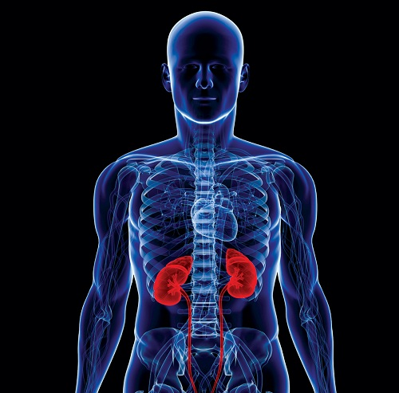

Human Effects

In addition, long-term exposure to air pollution can cause cancer and damage to the immune, neurological, reproductive, and respiratory systems. In extreme cases, it can even cause death.
Breathing polluted air puts you at a higher risk for asthma and other respiratory diseases.
peoples lung function decreased and they suffered from respiratory inflammation.
keep coughing and wheezing